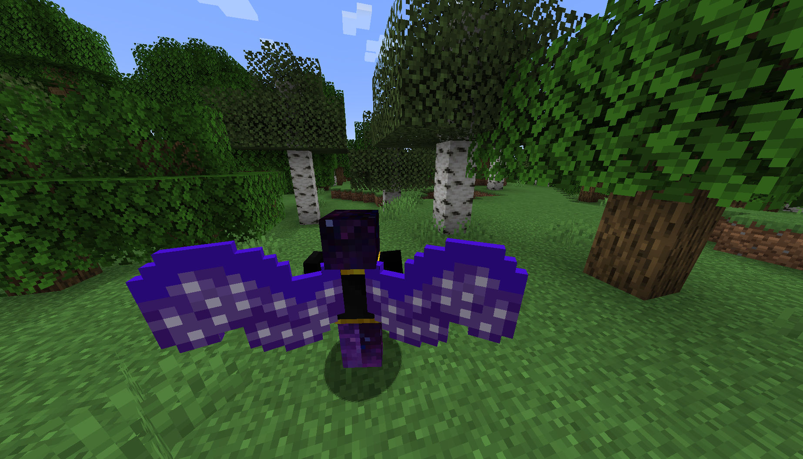
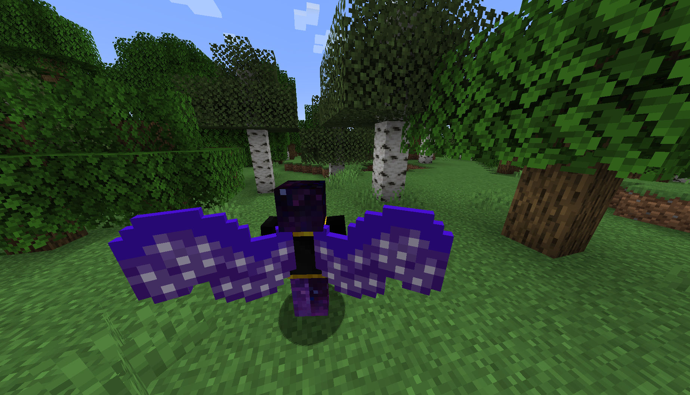

A Minecraft mod that adds 10+ wings with unique ways of aquiring them. This mod uses the mod Trinkets to enable the player to equipe the wings in a special wings slot. They are meant to follow the player along their progression through the game. This is the first Minecraft mod I've ever made and part of me wants to use the large amount of knowledge I've gained from it to try again and make the mod even better.
D3v1s0m did a bit code. Aslerix made all the art and it was used with permission. The bulk of the code and everything else was made by me.
- Link Here 
